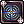
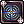
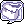

Farming Gefenia
Overview
How to get there: Talk to the  Warper –› Dungeons –› Gefenia
Warper –› Dungeons –› Gefenia
Gefenia is one of the most profitable maps for beginners while barely needing any investment to farm on it. The map is divided in four zones, since they have the same monster you are free to pick any of them.
Picking the right class is the first decision you should make, since Gefenia is an easy map you can farm it using any class, but to be efficient there are two options:  Rebellion and
Rebellion and  Mechanic.
The gameplay is slightly different depende on which one you choose, with that in mind let's dive in and see how to farm with them.
Mechanic.
The gameplay is slightly different depende on which one you choose, with that in mind let's dive in and see how to farm with them.
PS: Since when this guide was made the game changed a lot, nowadays I have seen a lot of genetics farming on it but I haven't played with one so I don't know what kinda of equipments they need.
Classes
 Rebellion
Rebellion
Overview
The rebellion is the cheapest gefenia farmer out there, it's easy to level up and does the job just right. If you are new to the server or to RO this is the best option.
Pros
- Easy to level up.
- Really cheap to make.
Cons
- Can't hold too much items because of poor weight capacity.
- Needs carry ammunition.
 Gameplay
Gameplay
The Rebellion gameplay is simple,  Teleport around and kill everything using  Round Trip. Once you are at weight go back to any city and stash all of your loot at the storage to sell later with
Teleport around and kill everything using  Round Trip. Once you are at weight go back to any city and stash all of your loot at the storage to sell later with  Overcharge and get back to farming.
Overcharge and get back to farming.
If you can't oneshot everything try maintaining the  Platinum Alter buff active.
Platinum Alter buff active.
 Stats
Stats
| Stat | Base Value | Description |
|---|---|---|
| STR | 120 | Slightly increases your attack and allows you to carry more itens. |
| AGI | 1 | You are free to put how many points you want. |
| VIT | 1 | You are free to put how many points you want. |
| INT | 80+ | Gives you a bigger SP pool. |
| DEX | 120+ | DEX is your main Attack stat. |
| LUK | 1 | You are free to put how many points you want. |
For more information about each stat you can go to Stats.
 Equipment
Equipment
| Item | Type | Description | How to obtain |
|---|---|---|---|
 Rideword Hat Rideword Hat |
Upper | Provides you with HP and SP leech. It's really important to keep your SP full even when you are at weight. | Buy it from players or do the Custom Headgear Quests, if you are new to the server I highly suggest you to craft it yourself. |
 Armor of Airship Armor of Airship |
Armor | The Airship set gives a good amount of stats, but the most important part is the increase in movement speed. | All of the parts are obtainable in the Airship Assault instance, since they are pretty cheap just buy them from players. |
 Manteau of Airship Manteau of Airship |
Garment | ||
 Boots of Airship Boots of Airship |
Footgear | ||
 Mini Mei Mini Mei |
Gatling gun | Round Trip needs a Gatling gun equipped to be used, this is the easiest one to get that has a good base ATK. | Buy it from Firearms Merchant, found at Main Office |
| Silver Bullet | Bullet | It's better to carry the cartridges, since they are lighter, and only open then when necessary. Use your hotkeys to make it easier to open and equip the bullets. | Buy the cartridges from Ammunition Experts, found at the Main Office |
 Agility Paradise Necklace V Agility Paradise Necklace V |
Accessory | Enables you to use Teleport. |
Buy it from Administrator Emil, found at The Eden Group it costs 15  Paradise Coin Paradise Coin
|
 Incubus Egg Incubus Egg |
Pet | When Loyal gives you more chance to leech SP, this pet is crucial because Round Trip uses a good amount of SP and rebellion has a small SP pool. Eats  Yellow Vital Flower, buy it from Heide at Prontera Yellow Vital Flower, buy it from Heide at Prontera |
Buy it from players or tame it using  Girl's Naivety, dropped from Incubus. Girl's Naivety, dropped from Incubus.
|
 Red Lantern Red Lantern |
Accessory | (Optional) Gives you the chance to drop  Alcohol, Alcohol,  Detrimindexta and Detrimindexta and  Karvodailnirol everytime you kill a monster, they are used to craft various consumables. Karvodailnirol everytime you kill a monster, they are used to craft various consumables. |
You can drop it at the Horror Toy Factory instance or bought from other players. |
 Tips and Tricks
Tips and Tricks
- Leave one of your storage completely free, this way you can use it to quickly stash and pickup the loot on your merchant to sell.
- Use the
Alt + Mmacros to your advantage, you can put destinations like@go 1and custom commands like@restock. - Learn to use the
@restockcustom command to restock cartridges faster. - You can use
Alt + Right Clickto quickly move itens from your inventory to the storage and vice versa. - Configure one of your hotkeys as smartcast on NovaExt, when you have the NPC sell window open just put your mouse on top of the first item icon and hold it.
- Keep your
 bullets and cartridges in the favorite tab and make it protected against selling.
bullets and cartridges in the favorite tab and make it protected against selling.
 Mechanic
Mechanic
Overview
The mechanic needs more investment to be able to farm, but they can achieve the highest profits if you can find Bubble Gum(Event) at a good price, that usually happens when there is a holiday event happening. Overall this is not recommended if you are new to the server or new to RO in general.
Pros
- They have one of the highest carrying capacity in the game thanks to their main stat being Strength and having  Enlarge Weight Limit.
- There is no need to storage your farming loot, you can directly sell it to the NPC making you lose less time outside of farming.
- Doesn't need to carry ammunition.
Cons
- The merchant and blacksmith classes are really slow to level if you are new to RO.
- The initial investment can be pretty steep depending on your stage of the game.
Gameplay
Remember to always carry Magic Gear Fuel and have an  Accelerator in your inventory, it doesn't need to be equipped, to be able to use
Accelerator in your inventory, it doesn't need to be equipped, to be able to use  Acceleration. Both can be bought from the Mado Dealer, found at the Main Office
Acceleration. Both can be bought from the Mado Dealer, found at the Main Office
Focus on killing Incubus and Succubus only, maintain Acceleration active all the time
Teleport around and kill them using  Axe Boomerang. Once you hit your 100 unique slot inventory limit go back to any city and sell everything.
Axe Boomerang. Once you hit your 100 unique slot inventory limit go back to any city and sell everything.
Yeon has made a great video showing how you should farm, while my build is slightly different the concept is still the same.
Stats
| Stat | Base Value | Description |
|---|---|---|
| STR | 120 | STR is your main Attack stat. |
| AGI | 1 | You are free to put how many points you want. |
| VIT | 70+ | Gives you a bigger health pool and defense. |
| INT | 70+ | Gives you a bigger SP pool. |
| DEX | 100+ | Gives you more Hit, you should not miss any of your attacks. |
| LUK | 1 | You are free to put how many points you want. |
For more information about each stat you can go to Stats.
Equipment
| Item | Type | Description | How to obtain |
|---|---|---|---|
| Rideword Hat |
Upper | Provides you with HP and SP leech. It's really important to keep your SP full even when you are at weight. | Buy it from players or do the Custom Headgear Quests, if you are new to the server I highly suggest you to craft it yourself. |
 Myst Case Card Myst Case Card |
Card Upper | Gives you the chance to drop  Gift Box. This is not necessary to start farming, but it's a good extra to have since they can give you Gift Box. This is not necessary to start farming, but it's a good extra to have since they can give you  Gold, either sell the gold to players or directly to a NPC. Gold, either sell the gold to players or directly to a NPC. |
Dropped from Myst Case or bought from other players. |
| STR Supplement Equipment | Armor | Combos with  DEX Supplement Equipment increasing Axe Boomerang damage by 100% and reduces the cooldown by 2 seconds. DEX Supplement Equipment increasing Axe Boomerang damage by 100% and reduces the cooldown by 2 seconds. |
Buy it from Ingrata A, at Verus for 4m zeny. |
 Thanatos Axe Thanatos Axe |
Two-handed Axe | A good Two-handed axe that gives you more leech, has a good base ATK and it's really easy to get. | Buy it for 200  Gray Shard near the entrance of Ghost Palace. Gray Shard near the entrance of Ghost Palace.
|
 Step Card Step Card |
Weapon Card | Increase Axe Boomerang damage by 30%. |
Dropped from Step, inside the Charleston Crisis instance, or bought from other players. |
 Nidhoggur's Shadow Garb Nidhoggur's Shadow Garb |
Garment | Another source of SP Leech | You can drop it from Nidhoggur's Shadow, inside the Nidhoggur's Nest instance, or bought from other players. |
 AGI Supplement Equipment AGI Supplement Equipment |
Footgear | Combos with STR Supplement Equipment giving +30 ATK. | Buy it for 10  Charleston Component from Ingrata M, at Verus or from other players. Charleston Component from Ingrata M, at Verus or from other players.
|
| DEX Supplement Equipment |
Accessory | Combos with STR Supplement Equipment increasing Axe Boomerang damage by 100% and reduces the cooldown by 2 seconds. |
Buy it for 10 Charleston Component from Ingrata M, at Verus or from other players.
|
 Strength Paradise Necklace V Strength Paradise Necklace V |
Accessory | Enables you to use Teleport. |
Buy it from Administrator Emil, found at The Eden Group it costs 15 Paradise Coin
|
| Red Lantern |
Accessory | (Optional) Gives you the chance to drop Alcohol, Detrimindexta and Karvodailnirol everytime you kill a monster, they are used to craft various consumables. It should replace the Strength Paradise Necklace V because of that it needs to be slotted with a  Creamy Card. Creamy Card. |
You can drop it at the Horror Toy Factory instance or bought from other players. |
Tips and Tricks
- Use the
Alt + Mmacros to your advantage, you can put destinations like@go 1and custom commands like@restock. - Learn to use the
@restockcustom command to restock Magic Gear Fuel faster. - You can use
Alt + Right Clickto quickly move itens from your inventory to the storage and vice versa. - Configure one of your hotkeys as smartcast on NovaExt, when you have the NPC sell window open just put your mouse on top of the first item icon and hold it.
- Keep your Magic Gear Fuel and Accelerator in the favorite tab and make it protected against selling.
Loot
What you want to loot changes from person to person, some people like picking up the ores, some only loot itens that are as efficient as possible, some loot utility itens also.
While Gefenia is known from being one of the best places to farm itens to sell directly to the npc, there are some itens that you should keep a closer look because they are useful in other places.
- Cursed Water imbues your weapon with the Dark element, good to quickly make you able to hit ghost enemies and a must to farm places with Holy monster like Odin's Temple 4 / Odin's Past.
- Hand of God used to craft the AGI Low Rank Shadow Gear.
 Yellow Gemstone used by Wise Old Woman, at Main Office Treasury, to remove cards from equipments.
Yellow Gemstone used by Wise Old Woman, at Main Office Treasury, to remove cards from equipments. Red Gemstone magic classes needs them to use certain skills.
Red Gemstone magic classes needs them to use certain skills. Boy's Pure Heart and
Boy's Pure Heart and  Girl's Naivety, used to tame Succubus and Incubus respectively.
Girl's Naivety, used to tame Succubus and Incubus respectively.- Chilvary Emblem is used to craft Orc Trophy, for more information check Tame Ingredients.
- Evil Wing is used to craft
 Evil Wing Ears, who is used to craft
Evil Wing Ears, who is used to craft  Fafnir Skin for more information check Custom Headgear Quests.
Fafnir Skin for more information check Custom Headgear Quests.  Incubus Horn and
Incubus Horn and  Succubus Horn are used to craft Drooping Succubus, for more information check Custom Headgear Quests.
Succubus Horn are used to craft Drooping Succubus, for more information check Custom Headgear Quests. Light of Cure,
Light of Cure,  Seal of Cathedral,
Seal of Cathedral,  Ur's Plate and
Ur's Plate and  Ring of Archbishop can be recycled to get Mora Coin, for more information go to Mora Equipment.
Ring of Archbishop can be recycled to get Mora Coin, for more information go to Mora Equipment.
For more information about every Gefenia item checkout Gefenia Loot.
Alootid
Below you will find some alootid setups, feel free to adapt them to your needs.
@alootid +522|+2621|+2610|+2613|+13313|+526|+1939and turn autoloot OFF.- This aloot setup is good if you are only killing Inccubus, Succubus and Violys.
- Only recommended to use it if you are farming with a single target heavy class, like mechanic.
- Makes you loot:
 Mastela Fruit Ring
Mastela Fruit Ring  Gold Ring
Gold Ring  Diamond Ring Huuma Swirling Petal
Diamond Ring Huuma Swirling Petal  Royal Jelly
Royal Jelly  Crimson Violin.
Crimson Violin.
@alootid +522|+2621|+2610|+2613|+13313|+2864|+2865|+2866|+1038|+1039|+912|+1060|+526|+1939|+1064|+7023|+15036|+21015|+715|+716and turn autoloot OFF.- Recommended if you do not want to pickup utility, quest and taming itens.
- Makes you loot: Mastela Fruit
 Ring Gold Ring
Ring Gold Ring  Diamond Ring
Diamond Ring  Huuma Swirling Petal
Huuma Swirling Petal  Light of Cure Seal of Cathedral Ring of Archbishop Little Evil Horn Little Evil Wing
Light of Cure Seal of Cathedral Ring of Archbishop Little Evil Horn Little Evil Wing  Zargon Golden Hair Royal Jelly Crimson Violin Reins
Zargon Golden Hair Royal Jelly Crimson Violin Reins  Blade Lost in Darkness Ur's Plate
Blade Lost in Darkness Ur's Plate  Crimson Two-Handed Sword Yellow Gemstone Red Gemstone
Crimson Two-Handed Sword Yellow Gemstone Red Gemstone
@alootid -1974|-1458|-1691|-1478|-12127|-740|-1919|-2407|-1472|-2318|-1421|-15014|-5017|-2108|-509|-984|-985|-756|-757|-12020and turn autoloot ON.- Recommended if you do want to pickup all the utility, quest and taming itens.
- Stops you from looting:
 Carrot Whip Partizan
Carrot Whip Partizan  Wondrous Foxtail Staff
Wondrous Foxtail Staff  Ahlspiess Professional Cooking Kit Plush Doll
Ahlspiess Professional Cooking Kit Plush Doll  Base Guitar Crystal Pumps
Base Guitar Crystal Pumps  Soul Staff Lords's Clothes
Soul Staff Lords's Clothes  Battle Hook Ebone Armor
Battle Hook Ebone Armor  Bone Helm
Bone Helm  Mirror Shield
Mirror Shield  White Herb Oridecon
White Herb Oridecon  Elunium
Elunium  Rough Oridecon
Rough Oridecon  Rough Elunium Cursed Water
Rough Elunium Cursed Water